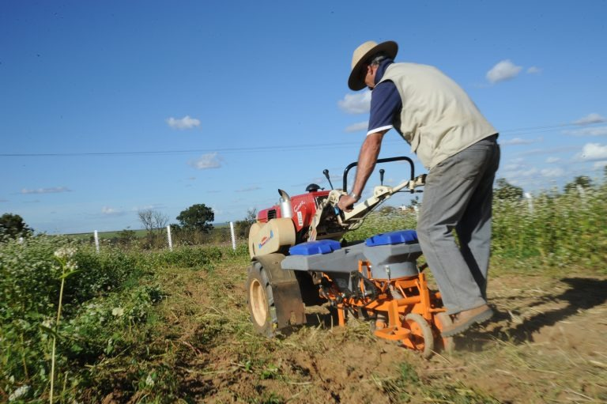

Tecnologia > Inovações
por Dr.Wendller
Atualizado em 03/11/2020 - 17h02min
Proposta prevê benefício a agricultores rurais em caso de pandemia
Garantia-Safra hoje é paga quando há perda de 50% da produção por estiagem ou excesso de chuvas

Foto: Édio Wenzke / Blog do Juares
O Projeto de Lei 2235/20 prevê, em caráter excepcional, o pagamento do Benefício Garantia-Safra aos agricultores familiares no caso da decretação de situação de emergência ou de estado de calamidade pública em razão de epidemia ou pandemia.
O texto em tramitação na Câmara dos Deputados insere dispositivos na Lei do Seguro-Safra. Atualmente essa norma assegura o benefício quando é comprovada a perda de pelo menos 50% da produção após estiagem ou excesso de chuvas.
O benefício é de no máximo R$ 1.200 anuais por família, dividido em até seis parcelas mensais. O projeto acrescenta hipótese de quitar igual valor em parcela única quando a negociação da produção acabar prejudicada devido a medidas sanitárias urgentes.
“O fechamento de feiras livres e de outras formas de comercialização direta impactam sobremaneira a agricultura familiar”, afirmaram os autores, os deputados Carlos Veras (PT-PE), Patrus Ananias (PT-MG) e Bira do Pindaré (PSB-MA).
Tramitação
A proposta tramita em caráter conclusivo e será analisada pelas comissões de Agricultura, Pecuária, Abastecimento e Desenvolvimento.